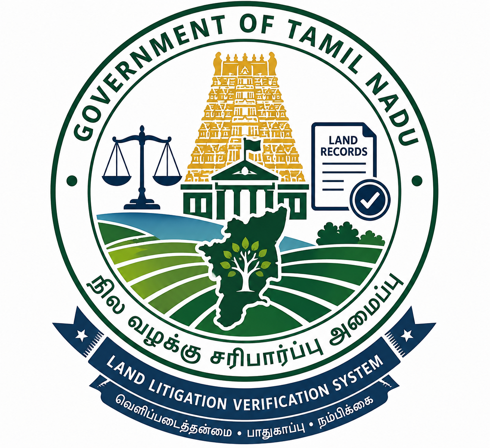
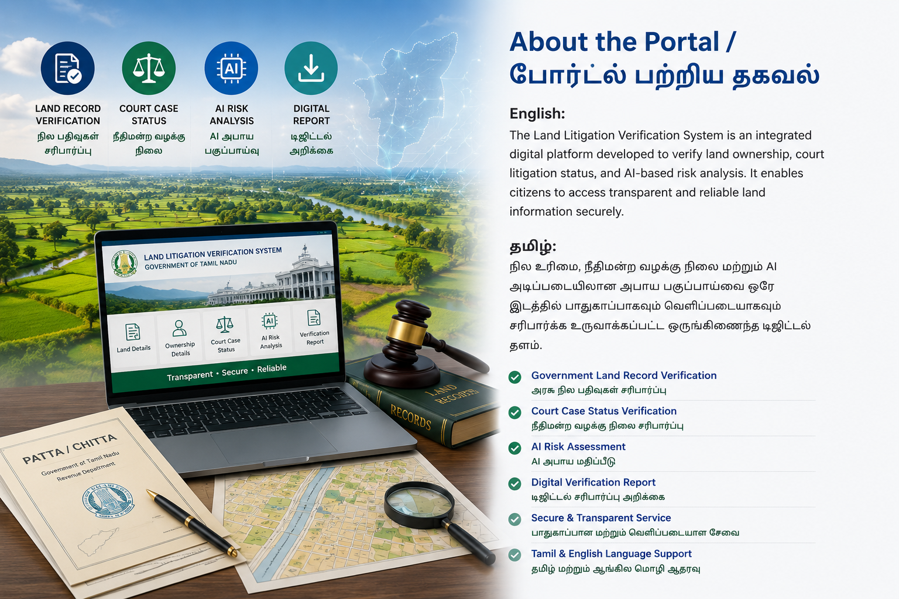

Land Litigation Verification System

Total Land Records
மொத்த நில பதிவுகள்
Court Cases Verified
சரிபார்க்கப்பட்ட வழக்குகள்
AI Accuracy
AI துல்லியம்
Online Service
ஆன்லைன் சேவை
Latest announcements from the Government of Tamil Nadu
தமிழ்நாடு அரசின் சமீபத்திய அறிவிப்புகள்